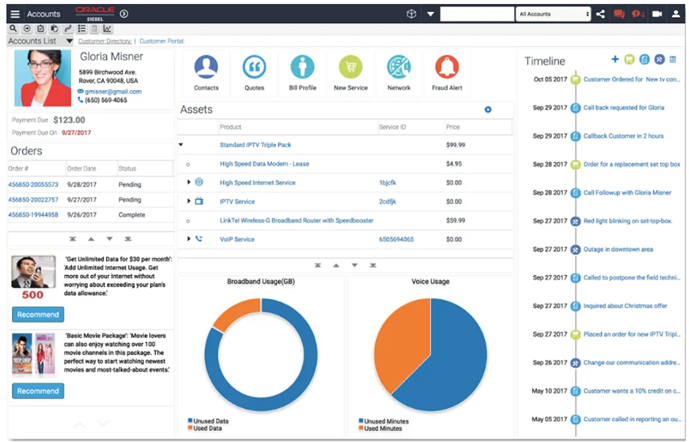

Data is only valuable when you can extract insights. Siebel provides comprehensive reporting and analytics capabilities to transform your CRM data into actionable business intelligence.
Form Reports: Detail view of single record (e.g., invoice)
Page 118
📋 Standard Reports
Out-of-the-Box Reports
Siebel eCommunications includes 200+ pre-built reports ready to use immediately.
Sales Reports
Pipeline Report: Opportunities by stage and sales rep
Forecast Report: Revenue forecast by period
Win/Loss Analysis: Closed opportunities with reasons
Activity Report: Sales activities by rep and account
Quota Attainment: Performance vs. targets
Service Reports
Open SR Report: All open service requests by priority
SLA Compliance: SLA met vs. breached
Resolution Time: Average time to resolve by category
Agent Performance: SRs handled per agent
Customer Satisfaction: Survey results and CSAT scores
Marketing Reports
Campaign Performance: Responses, leads, ROI
Lead Source Analysis: Lead volume by source
Conversion Funnel: Lead to opportunity to customer
Email Analytics: Open rates, click rates, unsubscribes
💡 Tip: Start with standard reports and customize them rather than building from scratch. Saves time and follows best practices.
Page 119
▶️ Running Reports
How to Run a Report
Navigate to: Site Map → Reports → [Report Category]
Select desired report from list
Click Run Report button
Set parameters (date range, filters, grouping)
Choose output format (HTML, PDF, Excel, CSV)
Click OK to generate
View results in browser or download file
Report Parameters
Common Parameters:
• Date Range: Last Month, This Quarter, Custom dates
• Owner: Specific user or All users
• Status: Active, Closed, All
• Organization: Filter by business unit
• Product: Filter by product line
• Custom Filters: Account type, revenue range, etc.
Output Formats
HTML
Interactive viewing in browser
✅ Sortable columns, clickable links
PDF
Formatted document for printing
✅ Professional appearance, secure
Excel
Spreadsheet for further analysis
✅ Pivot tables, formulas, charts
CSV
Raw data for imports
✅ Lightweight, universal compatibility
Page 120
🔨 Creating Custom Reports
Report Builder Interface
Siebel's Report Builder provides a wizard-driven interface for creating custom reports without coding.
Report Creation Steps
Select Data Source: Choose Business Component (e.g., Account, Opportunity)
Choose Fields: Select columns to include in report
Add Calculations: Sum, Count, Average, Min, Max
Set Grouping: Group by owner, region, product, etc.
Define Sorting: Order results by field(s)
Apply Filters: Limit records (e.g., Status = Active)
Format Layout: Headers, footers, fonts, colors
Save and Test: Name report and run sample
Example: Monthly Sales by Rep
Data Source: Opportunity BC Fields: Owner, Opportunity Name, Revenue, Close Date Filter: Status = "Closed Won" AND Close Date = This Month Group By: Owner Calculations: SUM(Revenue), COUNT(Opportunities) Sort: Owner ascending Output:
Rep Name | Opportunities | Total Revenue
Smith, John | 15 | $450,000
Jones, Mary | 12 | $380,000
...
Page 121
🎓 Advanced Reporting Techniques
Calculated Fields
Create custom calculations within reports:
Average Deal Size: SUM(Revenue) / COUNT(Opportunities)
Growth %: ((This Period - Last Period) / Last Period) × 100
Cross-Object Reporting
Pull data from related objects in single report:
Opportunity Report with Account Data:
Opportunity.Name
Opportunity.Revenue
Account.Name
Account.Industry
Account.Annual Revenue
Primary Contact.Full Name
Primary Contact.Email
Sub-Reports
Embed detail reports within summary reports:
Parent: Accounts grouped by industry
Child: For each account, show all opportunities
Benefit: Comprehensive view in single report
Page 122
📰 Oracle BI Publisher
📌 Training Note: BI Publisher is included with your Siebel installation and runs within the Siebel environment. No external integration needed - it's a built-in reporting component.
What is BI Publisher?
Oracle BI Publisher is an enterprise reporting tool embedded in Siebel for pixel-perfect formatted reports, complex layouts, and advanced features.
BI Publisher Advantages
Professional Formatting: Create polished reports with logos, headers, watermarks
Template-Based: Use Word/Excel templates for layout
Multi-Format Output: Generate PDF, Excel, Word, RTF, HTML from single template
Bursting: Generate personalized reports for multiple recipients
Scheduling: Automate report delivery
Localization: Multi-language report generation
Common BI Publisher Reports
Invoices: Formatted customer invoices with company branding
Quotes: Professional sales quotes with terms and conditions
Statements: Account statements with transaction detail
Letters: Form letters with mail merge
Regulatory Reports: Compliance reports with specific formatting
Page 123
📊 Interactive Dashboards
Dashboard Overview
Dashboards provide at-a-glance views of key metrics with interactive charts and tables. Users can drill down for details.

Dashboard Components
Chart Applets
Bar/Column Charts
Line/Area Charts
Pie/Donut Charts
Gauge Charts
Funnel Charts
Data Applets
List Applets
Form Applets
KPI Tiles
Summary Tables
Trend Indicators
Dashboard Examples
Sales Manager Dashboard:
Pipeline value by stage (funnel chart)
Forecast vs. quota (gauge chart)
Top 10 opportunities (list)
Win rate trend (line chart)
Activities this week (KPI tile)
Service Manager Dashboard:
Open SRs by priority (bar chart)
SLA compliance % (gauge)
SRs at risk (list)
Resolution time trend (line chart)
Customer satisfaction (KPI tile)
Page 124
🎯 Key Performance Indicators (KPIs)
What are KPIs?
KPIs are measurable values that demonstrate how effectively an organization is achieving business objectives. Siebel tracks and displays KPIs in real-time.
Real-time analytics display current data without manual refresh, critical for contact centers and sales floors.
Real-Time Use Cases
Contact Center Wallboards: Live display of call queue, wait times, agents available
Sales Leaderboards: Current day/week/month rankings update as deals close
Service Metrics: Open SRs, SLAs at risk, backlog by priority
Campaign Tracking: Email open rates, clicks, conversions as they happen
Implementation
Auto-Refresh Configuration:
• Interval: 30 seconds, 1 minute, 5 minutes
• Trigger: Time-based or event-based
• Scope: Full page or specific applet
• Performance: Balance freshness vs. server load
⚠️ Performance Consideration: Real-time dashboards with many users can impact database performance. Use caching and optimize queries.
Page 126
📉 Data Visualization Best Practices
Choosing the Right Chart Type
Bar/Column Charts: Compare values across categories
Example: Revenue by product line, SRs by priority
Line Charts: Show trends over time
Example: Quarterly revenue growth, daily SR volume
Pie Charts: Show proportional breakdown (use sparingly)
Example: Market share by competitor, SRs by type
Funnel Charts: Visualize conversion process
Example: Sales pipeline stages, lead conversion funnel
Gauge Charts: Show progress toward goal
Example: Quota attainment, SLA compliance %
Visualization Guidelines
Keep It Simple: Avoid cluttered charts with too many data points
Use Color Purposefully: Green = good, Red = bad, consistent meanings
Label Clearly: Axis labels, legends, data point values
Choose Appropriate Scale: Start Y-axis at zero for fair comparison
Limit Pie Slices: Maximum 5-7 slices, combine others into "Other"
Page 127
⏰ Scheduling and Distribution
Automated Report Delivery
Schedule reports to run automatically and email results to recipients. No manual intervention required.
Schedule Configuration
Open report definition
Click Schedule button
Set frequency:
Daily (weekdays only or every day)
Weekly (specify days: Mon, Wed, Fri)
Monthly (1st, 15th, or last day)
Quarterly
Set time: 7:00 AM (before business hours)
Choose output format: PDF, Excel
Add recipients: email addresses or distribution lists
Set subject line and message
Save schedule
Common Scheduled Reports
Daily: Open SRs by priority → Service managers Weekly: Sales activity summary → Sales VPs Monthly: Revenue by product → Finance team Quarterly: Customer satisfaction → Executive team
💡 Best Practice: Include date range in subject line Example: "Weekly Sales Report - Oct 25-31, 2025"
Page 128
🔒 Report Security and Access Control
Data Security in Reports
Reports respect Siebel's security model. Users only see data they have permission to access.
Security Layers
Report Visibility: Which reports appear in user's menu
Data Visibility: Which records user can see in report
Field Visibility: Which columns are displayed
Report Execution: Who can run vs. schedule vs. modify reports
Access Control Examples
Sales Rep:
• Sees: Own opportunities only
• Cannot see: Colleague opportunities or manager overrides
Sales Manager:
• Sees: Own team's opportunities
• Cannot see: Other teams' opportunities
Sales VP:
• Sees: All opportunities in region
• Cannot see: Other regions without permission
Sensitive Data Protection
⚠️ Protect Confidential Information:
Mask credit card numbers (show last 4 digits only)
Redact social security numbers
Hide salary and compensation data
Restrict access to financial reports
Audit report execution (who ran what, when)
Page 129
📤 Data Export Capabilities
Export Options
Users can export data from any list applet for offline analysis or data migration.
Click summary data to see underlying details. Essential for investigating issues and opportunities.
Drill-Down Levels
Level 1: Total Company Revenue: $50M
↓ (Click to drill down) Level 2: By Region: North $20M, South $18M, West $12M
↓ (Click South) Level 3: By Rep in South: Smith $6M, Jones $5M, Brown $4M...
↓ (Click Smith) Level 4: Individual Opportunities for Smith
Common Drill-Down Paths
Geographic: Company → Region → Territory → Rep → Account
Product: Total → Product Line → Product → SKU → Customer
Time: Year → Quarter → Month → Week → Day
Organizational: Company → Division → Department → Team → Individual
💡 Use Case: Executive sees revenue down in South region. Drills to see it's concentrated in Florida territory. Drills further to identify rep turnover caused the dip. Takes corrective action (hire, reassign accounts).
Page 135
📋 Report Governance
Managing Report Sprawl
Without governance, organizations end up with hundreds of redundant, outdated reports that confuse users.
Reports containing personal data must comply with privacy regulations.
GDPR Compliance
Data Minimization: Only export necessary fields
Retention: Don't store exported reports longer than needed
Anonymization: Mask PII when possible
Consent: Verify customer consent for data processing
Audit Trail: Log who accessed what personal data
Right to Erasure: Reports must reflect deleted customer data
Data Masking Example
Full Data (Admin only):
Name: John Smith
Email: john.smith@email.com
Phone: (555) 123-4567
SSN: 123-45-6789
Credit Card: 4532-1234-5678-9012
Masked Data (Standard user):
Name: John S****
Email: j***@email.com
Phone: (555) ***-**67
SSN: ***-**-6789
Credit Card: ****-****-****-9012
Compliance Reporting
Generate reports for regulatory compliance:
Data access audit (who viewed customer records)
Consent status report
Data retention compliance
Breach notification logs
Page 139
🎯 Report ROI and Adoption
Measuring Report Value
Track report usage to understand which reports provide value and which to retire.
Usage Metrics
Run Frequency: How often report is executed
Unique Users: Number of distinct users running report
Avg Execution Time: Performance indicator
Export Rate: % of runs that are exported (high = valuable)
Dashboard Placement: Featured on home pages?
Adoption Strategies
Training: Show users how to run and interpret reports
Templates: Provide pre-built reports for common needs
Self-Service: Empower users to create own reports
Mobile Access: Enable reports on smartphones/tablets
Alerts: Push critical metrics to users proactively
Gamification: Leaderboards for sales teams
Report Retirement Criteria
Candidates for Retirement:
• No runs in last 90 days
• < 3 unique users
• Owner left company
• Duplicate of another report
• Data source no longer exists
• Regulatory requirement expired
Page 140
📱 Mobile Reporting
Reports on Mobile Devices
Modern CRM users need access to reports on smartphones and tablets while traveling or away from desk.
Mobile-Optimized Design
Responsive Layout: Adapts to screen size
Touch-Friendly: Large buttons, easy navigation
Simplified Views: Key metrics only, not cluttered
Offline Capable: Download reports for offline viewing
Fast Loading: Minimize data transfer
Mobile Dashboard Example
Sales Manager Mobile View:
Today's Activities: 5 (tap to see details)
Open Opportunities: $2.4M
Pipeline This Quarter: $8.1M
Team Quota Attainment: 87%
[Chart: Revenue Trend - Last 30 Days]
💡 Best Practice: Design mobile-first. Create concise mobile dashboards, then expand for desktop rather than trying to shrink desktop reports to mobile.